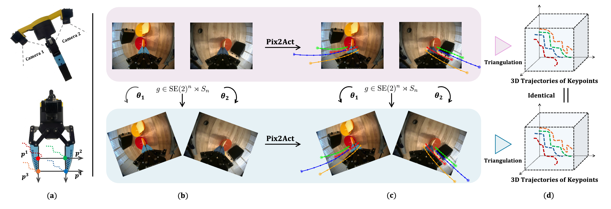
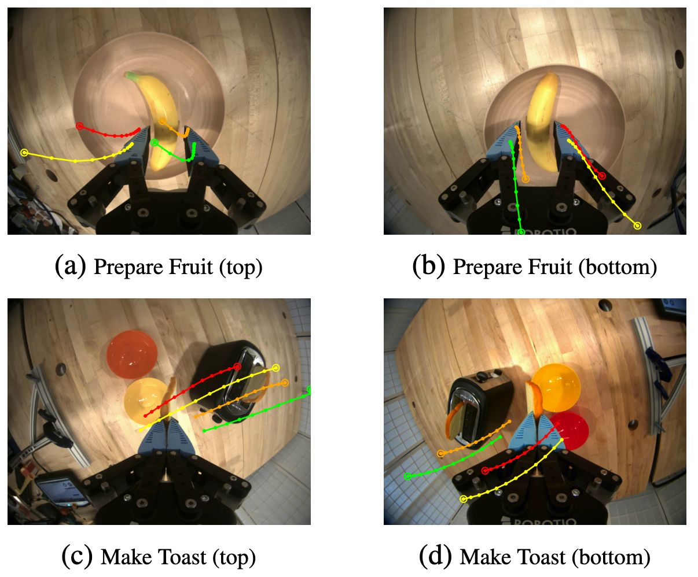

Pix2Act
Image-Space Manipulation Policies with Equivariant Augmentation
1 Northeastern University 2 Stanford University 3 University of Pennsylvania 4 Brown University 5 Texas A&M University
* Corresponding author † Equal advising
Motivation
Why Pix2Act?
1 A natural action representation
Humans don't represent action with translation and rotation — we can't move our hand by commanding "forward 2 cm, rotate 15° about the z-axis." So how do we represent the concept of action? The trajectories of keypoints are a natural answer. And a subtler fact: our eyes never directly perceive the 3D trajectory of the hand — we learn this action representation with two eyes by interacting with the physical world. Pix2Act explores a new action representation for robot learning: continuous keypoint trajectories in image space.
2 Data augmentation for robots
Data augmentation is a cornerstone of deep learning. In vision, random crops, rotations, and color jittering greatly improve robustness and generalization to unseen distributions; LLMs likewise reshape sequences to sharpen understanding. But it's hard to apply to robot data — observations usually live in 2D while actions are defined in 3D, leaving a domain gap. In this work, we unlock data augmentation for robot learning together with our new action representation.
Abstract
Representing manipulation actions as 2D trajectories in the camera plane provides a compact and interpretable basis for learning complex 3D manipulation policies. However, it also creates challenges from out-of-frame trajectories and limited precision. We propose Pix2Act, an imitation learning method that addresses these challenges by generating continuous image-space keypoint trajectories in each camera plane and losslessly recovering end-effector poses via triangulation. This reformulates high-dimensional 3D control as a simpler, more learnable 2D prediction problem. Crucially, it aligns observations and actions in the same coordinate space, enabling equivariant transformations to jointly rotate individual camera images together with their image-space actions. We analyze the symmetry properties of this augmentation and design a network architecture that can fuse multiple camera views while respecting their per-view rotations. As a result, Pix2Act implicitly enlarges the support of the data distribution and learns invariant action structures across transformations, yielding improved generalization and overall performance. Across diverse simulated and real-world manipulation tasks, Pix2Act outperforms state-of-the-art baselines and remains robust under camera perturbations.

Key Ideas
Ideas behind Pix2Act
n-Equivariance via image-space actions
Overfitting is a well-known headache in robot learning, and data augmentation helps. Invariant augmentation perturbs observations while keeping actions fixed, which only improves robustness. Equivariant augmentation transforms both observations and actions, but it needs the two in a shared space, and a dimensional gap separates 2D RGB observations from 3D actions over time. Pix2Act closes this gap by expressing 3D action chunks as continuous, unbounded 2D image coordinates relative to a pair of in-hand cameras. With actions and observations in the same space, rotating an image rotates its predicted trajectory by the same amount. We call this n-equivariance.
Plug-and-play dual in-hand cameras
Our system uses an easy-to-plug dual in-hand camera design (Figure 1) with three advantages. First, the close proximity of the cameras to the end-effector lets our model see the manipulated objects with high acuity, giving clearer patterns of how the end-effector tips interact with the target object. Second, this configuration is readily deployable and easily integrated with different robotic arms. Finally, projecting the action chunk onto the in-hand views naturally canonicalizes the action in the end-effector frame, so the representation becomes inherently SE(3)-invariant, substantially improving policy generalization.
Real-World Experiments
Real-world manipulation
Pix2Act runs closed-loop on a real robot across long-horizon, contact-rich tasks.
Prepare Fruit Plate · 1× speed
Make Toast · 1× speed
Predicted Trajectories

Robustness
Robustness to camera perturbations
We evaluate robustness to camera perturbations on the Plug Flower and Put in Drawer tasks by randomly rotating the agent-view camera at test time. This differs from the agent-view ablation: rather than removing the view, we keep it but introduce out-of-distribution viewpoint shifts. Pix2Act remains unaffected, while Diffusion Policy fails to complete the tasks.
Plug Flower · rotated agent view · 1× speed
Put in Drawer · rotated agent view · 1× speed
Success Rates
| Task | # Demo | Pix2Act | DP |
|---|---|---|---|
| Plug Flower | 30 | 80 | 55 |
| Put in Drawer | 60 | 90 | 50 |
| Prepare Fruit Plate | 70 | 85 | 60 |
| Make Toast | 100 | 85 | 60 |
BibTeX
@article{huang2026pix2act, title = {Pix2Act: Image-Space Manipulation Policies with Equivariant Augmentation}, author = {Huang, Haojie and Zhao, Linfeng and Liu, Haotian and Zhang, Ye and Huang, Si-Yuan and Jia, Mingxi and Hu, Boce and Lin, Fangzhou and Qi, Yu and Wang, Dian and Walters, Robin and Platt, Robert}, journal = {arXiv preprint}, year = {2026}, }